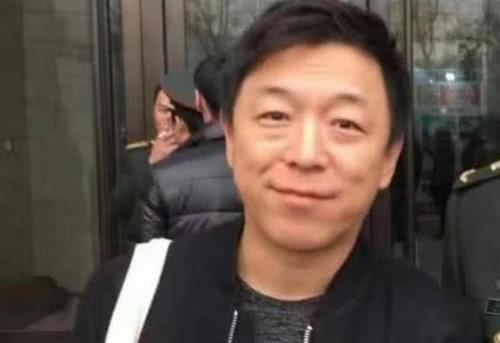

|
娱乐
|
新闻网 |
贾玲家晚餐，黄磊家晚餐，岳云鹏家晚餐，差距一目了然民以食为天即便是明星也是如此，不管他们的收入有多么丰厚，最重要的还是吃。今天就带大家感受三位明星的晚餐都是什么样的？从他们的晚饭中，相信大家都会有不同的结论。当然这三位艺人都是对于身材不那么注重的明星，因为注重身材的明星根本就没有晚餐这回事。 |
|
哪吒：申公豹台词意外走红，只因太过现实，引众多网友共鸣相信很多人都看过前段时间大火的《哪吒之魔童降世》这部动漫电影吧，这部电影从播起就犹如一匹脱缰的“黑马”一样奔腾，且票房数一直冲到国内第二的票房，仅次于吴京的《战狼2》，不仅如果这部动漫电影也走出了国门，成为了国漫影视的代表制作。这部动漫可谓是五年磨一剑，是饺子导演的知名代表作。剧中的哪吒由于一些原因身为魔丸却有着一颗不服输的心，哪吒从出生就不被世人所认可的，但哪吒从未认过命，最终通过自己的努力证明了自己的一切，赢得了世人的认可。 |
|
明星片场休息：赵丽颖蹲土坑，刘亦菲炒菜，看见胡歌我笑了明星拍戏看似是一件简单的事情，其实是很累人的，除了吃饭和睡觉的时间，很少有时间去休息。那么明星拍戏休息时候到底都在干嘛？你们有没有很想知道？那么小编就带领你们看下幕后的他们吧！ |
|
|  | 人民大会堂会议不许化妆，明星全素颜出镜，胡歌颜值依旧抗打啊我们都知道人民大会堂是一个非常神圣庄严的地方，里面举办的会议都是非常严谨的，无论是谁到了里面都要保持严肃，必须素颜，任何人都不例外，因此许多明星也是在这个庄严的地方露出了自己真正的颜值。 |
三个兄弟都是国宝级坏人，一个比一个坏，却一个比一个还受欢迎考量一个演员的演技如何，演得像不像是通俗的标准。而像不像，主要看的是他和剧中的角色是否贴合。像有名的国宝级"三大恶人"——计春华、杜玉明、李明，正是因为长得很像坏人，特别贴合他们演的角色，以至于观众无法从电视剧中抽身，会认为演恶人演的很好的现实中也是恶人。其实这是非常没有道理的。观众们对他们的态度越激烈，反倒越能说明他们的演技好。 |
|
片酬上亿的明星片场吃什么？吴京吃泡面，华仔落魄，杨颖九菜一汤近年来，娱乐圈的小鲜肉与小仙女们都很吃香，那么多片酬动不动就上千万元，有的甚至拿到上亿的片酬，这些钱的数目可能很多人打一辈子工也赚不到这么多钱。 其实，这些拿着上亿片酬的明星都是很辛苦的，他们需要通宵熬夜地去拍戏，NG过无数次才能拍下一个镜头，他们的工作也是要流血流汗的，拿着这样高的工资，他们在片场里面吃的盒饭到底是什么样子的呢？今天小编就带大家来看一看！ |
|
亮剑：楚云飞摆鸿门宴，旧版喝的是白酒，看到新版气的手发抖说到《亮剑》这部电视剧，大家都是非常的熟悉。如今，《亮剑》播出的13年间，不知道被各大电视台重播了多少次，这是唯一一部有这样待遇的战争题材作品。剧中的李云龙一角堪称是传奇人物，虽然有一些缺点，但是打仗上可谓是战无不胜。 |